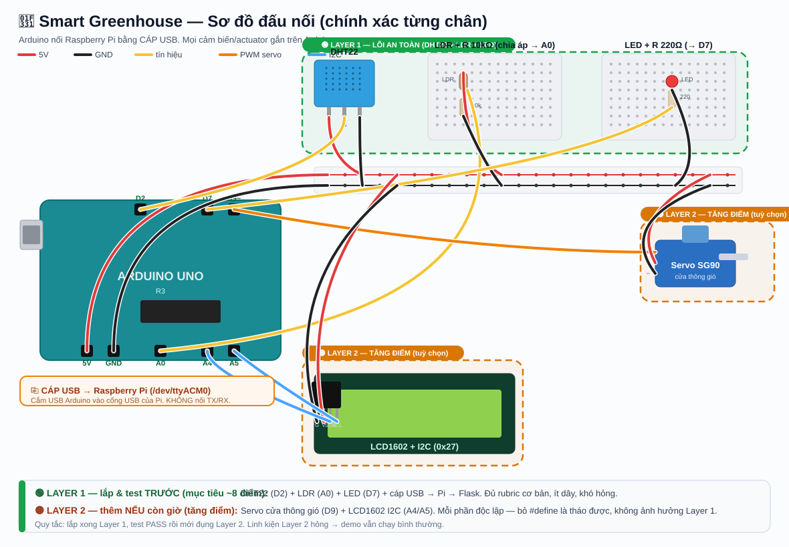
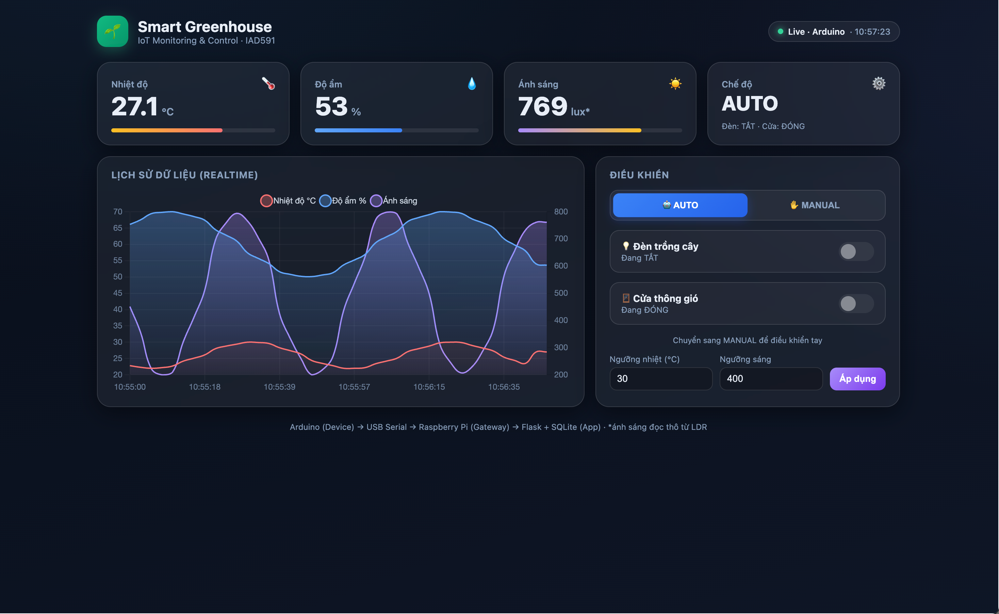

Hệ thống IoT nhà kính thông minh — đo nhiệt độ, độ ẩm, ánh sáng và tự động điều khiển đèn + cửa thông gió. Đồ án cuối kỳ IAD591.
Mô phỏng một nhà kính tự động: cảm biến đo môi trường → tự bật đèn khi tối, mở cửa khi nóng → hiển thị & điều khiển trên dashboard web.
DHT22 đo nhiệt/ẩm, LDR đo ánh sáng — đọc liên tục mỗi giây.
Tối → bật đèn trồng cây. Nóng → mở cửa thông gió (servo). Có chế độ Auto/Manual.
Dashboard web: số liệu realtime, biểu đồ lịch sử, điều khiển từ xa, lưu SQLite.
Đúng mô hình IoT của đề bài. Điểm mấu chốt: Arduino nối Pi bằng cáp USB — không dùng dây TX/RX, không cần hạ áp, hết lỗi truyền dữ liệu.
/dev/ttyACM0 → lưu SQLite → API → dashboard. Lệnh điều khiển đi ngược lại: web → Pi → Arduino.Tất cả cảm biến/actuator gắn trên Arduino. → Mở sơ đồ tương tác (bấm từng linh kiện để xem dây nối).

Sơ đồ breadboard chính xác từng chân (tạo bằng code gen_breadboard.py) — đấu theo đúng hình này. Xem thêm sơ đồ khối: wiring.svg.
Quy tắc vàng: lắp tới đâu test tới đó. Xong Layer 1 = đã chắc ~8 điểm. Layer 2 làm nếu còn giờ — mỗi phần độc lập, hỏng không ảnh hưởng phần khác.
ls /dev/ttyACM* thấy ttyACM0Chi tiết đầy đủ: BUILD_CHECKLIST.md →
Cài thư viện trong Arduino IDE: DHT sensor library (Adafruit) + LiquidCrystal_I2C. Rồi nạp file:
arduino/greenhouse/greenhouse.ino
cd rpi pip3 install -r requirements.txt python3 app.py
Mở trình duyệt: http://<ip-của-pi>:5000

| Tiêu chí | Mức 9–10 | Đã đạt |
|---|---|---|
| Arduino | ≥2 cảm biến + LCD + actuator | DHT22 + LDR + LCD + LED + Servo ✓ |
| Giao tiếp | Serial ổn định | USB Serial /dev/ttyACM0 ✓ |
| Raspberry Pi | Flask dashboard + điều khiển | ✓ |
| Lưu dữ liệu | SQLite | ✓ |
| Dashboard | hiện tại + lịch sử + chart | ✓ |
| Điều khiển GUI | bắt buộc | LED/Vent/Mode/Ngưỡng ✓ |
| Bonus | UI đẹp + chart + sáng tạo | +0.75 ✓ |
Mọi thứ nhóm cần. Click để mở.
git clone https://github.com/bnqtoan/smart-greenhouse-iot.git
{kind=link}